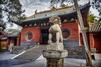
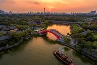
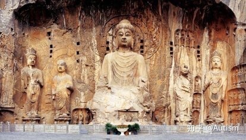
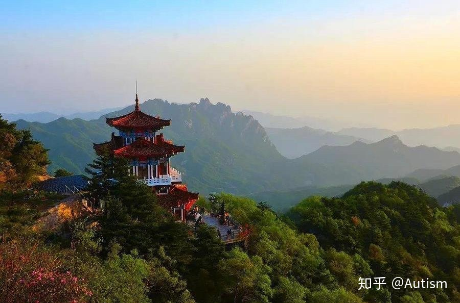
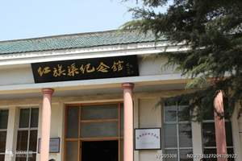
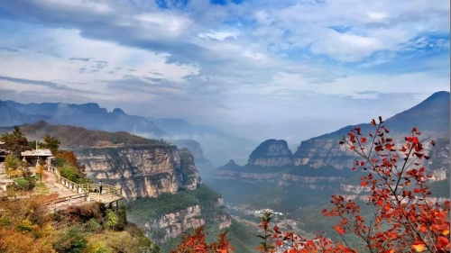
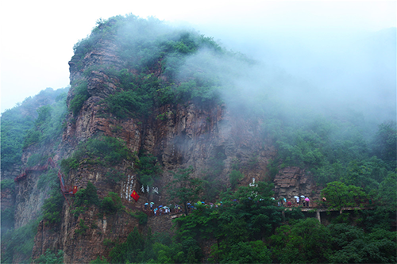
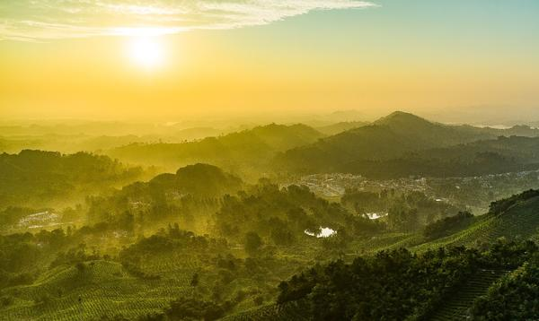

Longmen Grottoes
A UNESCO World Heritage Site with over 100,000 Buddhist statues carved into limestone cliffs along the Yi River, dating from the Northern Wei to Tang Dynasty. The site contains 2,345 caves and niches, housing remarkable examples of Chinese stone carving art.

Shaolin Temple
The legendary birthplace of Zen Buddhism and Chinese martial arts, founded in 495 AD during the Northern Wei Dynasty.

Yin Ruins
A UNESCO World Heritage Site and the ancient capital of the Shang Dynasty, where oracle bone inscriptions were first discovered.

Mount Song
One of the Five Great Mountains of China, a UNESCO World Heritage Site and center of Taoist and Buddhist worship for millennia.
White Horse Temple
The first Buddhist temple ever built in China, established in 68 AD during the Eastern Han Dynasty. Known as the "Cradle of Chinese Buddhism."

Millennium City Park
A stunning cultural theme park recreating the bustling life of Bianjing (ancient Kaifeng) during the Northern Song Dynasty.

Yuntai Mountain
A UNESCO Global Geopark featuring breathtaking red sandstone canyons, cascading waterfalls, and pristine forests in northern Henan.
Must-Visit Highlights

Iron Pagoda in Kaifeng
Built in 1049 during the Northern Song Dynasty, this 13-story octagonal pagoda is covered with glazed tiles that give it a distinctive iron-like appearance. Standing 55.88 meters tall, it has survived numerous earthquakes over the centuries.
Historical Monument
Henan Museum
One of China's oldest and largest museums, housing a collection of over 170,000 cultural relics. Its iconic pyramid-like architecture in Zhengzhou makes it a landmark destination for history enthusiasts.
Cultural InstitutionLaojun Mountain
Located in Luanchuan, Luoyang, this sacred Taoist mountain reaches an elevation of 2,217 meters. Its stunning peaks, sea of clouds, and ancient temples attract nature lovers and spiritual seekers alike.
Natural Wonder
Qingming Riverside Park
Inspired by the famous painting "Along the River During the Qingming Festival," this park in Kaifeng brings the Song Dynasty to life with interactive exhibits, performances, and authentic period architecture.
Theme ParkTravel Tips for Henan
Make the most of your Henan adventure with these essential tips
Best Time to Visit
Spring (April-May) for peony blossoms and autumn (September-October) for pleasant weather and colorful foliage are ideal seasons.
Getting Around
Zhengzhou's high-speed rail hub connects to all major cities. Buses and taxis are readily available at each attraction site.
Photography
Most outdoor sites welcome photography. Some indoor museum exhibits may restrict flash photography. Always ask before shooting.
Budget Tips
Many national parks offer discounted tickets for students and seniors. Street food is affordable and delicious - perfect for budget travelers.
Local Customs
Remove shoes when entering temples. Dress modestly at religious sites. A small bow shows respect when greeting monks.
Stay Connected
Free Wi-Fi is available at most tourist sites and hotels. Consider getting a local SIM card for navigation and translation apps.